RTR: Imperium Surrectum
RTR: Imperium SurrectumThe Aetolian League units
2022-11-21 · moscaflaca

Today we have released our first official beta for 0.6 and encourage anyone interested to join through a channel .
Now that that's covered today we will be previewing the units of one of my personal favorite factions!
This faction is known for being considered an unsophisticated and barbaric group instead of being "True Greeks". However, they were able to defeat an invading army of Gauls that was threatening to sack Delphi. During the Hellenistic period they emerged as a dominant state in Central Greece. Now, it's time to meet the Aetolian League! :aetolia:
Aetolian Akontistai
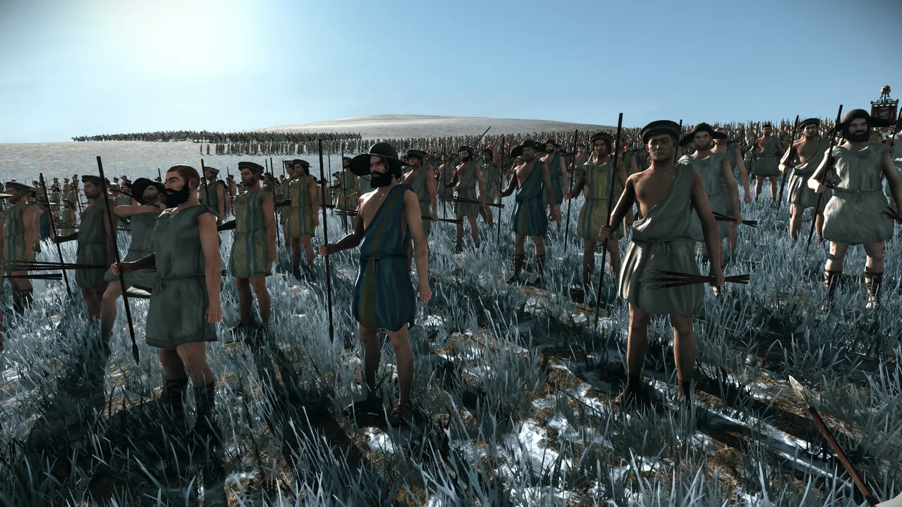
Aetolian Slingers
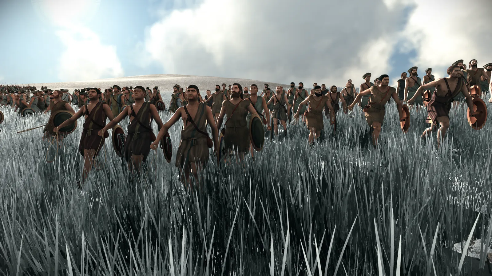
Aetolian Peltasts
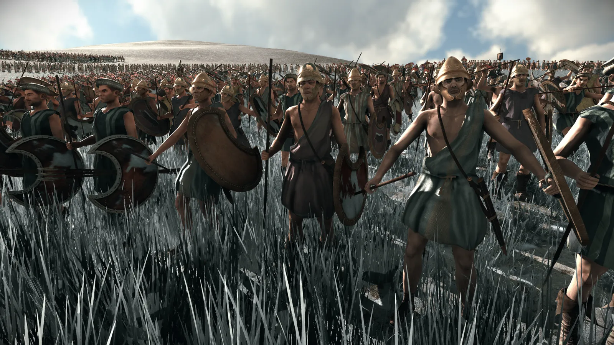
Aetolian Archers
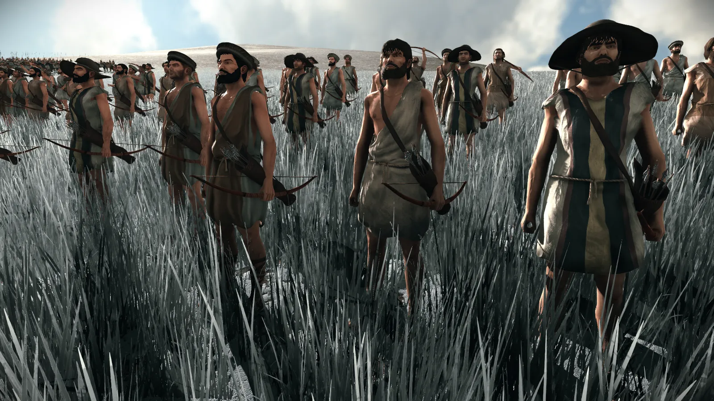
Aetolian Thureophoroi
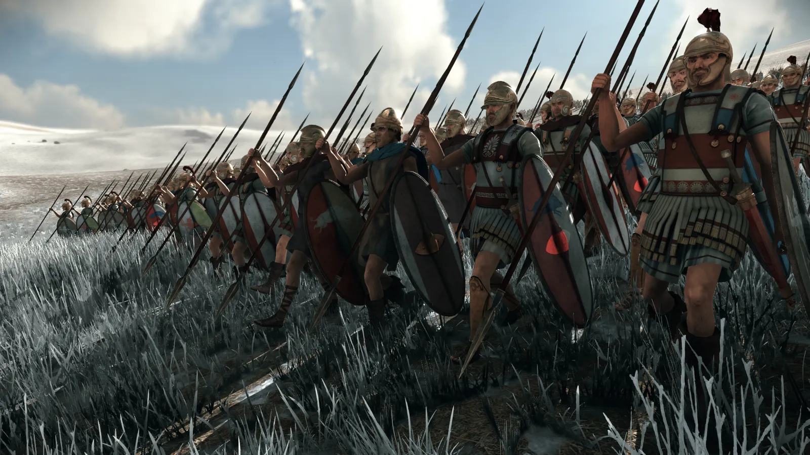
Aetolian Epilektoi
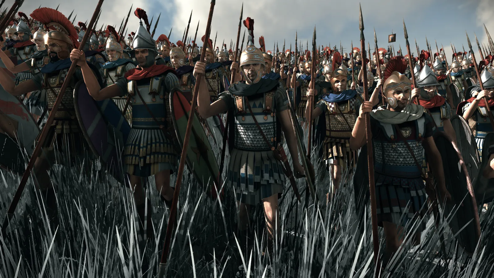
Aetolian Prodromoi
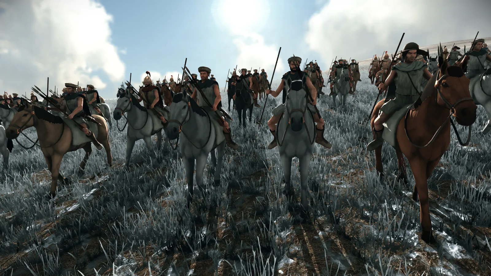
Aetolian Cavalry
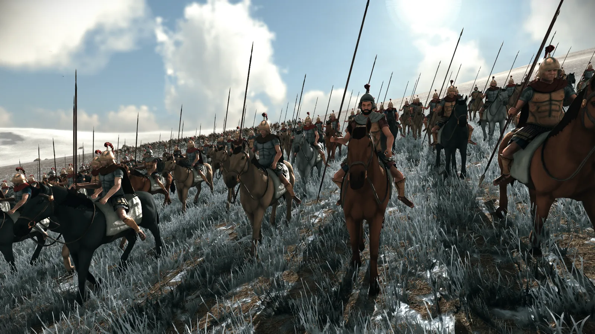
Neocretan Archers
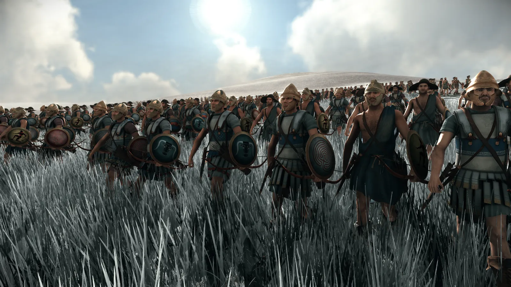
Aetolian Thorakitai
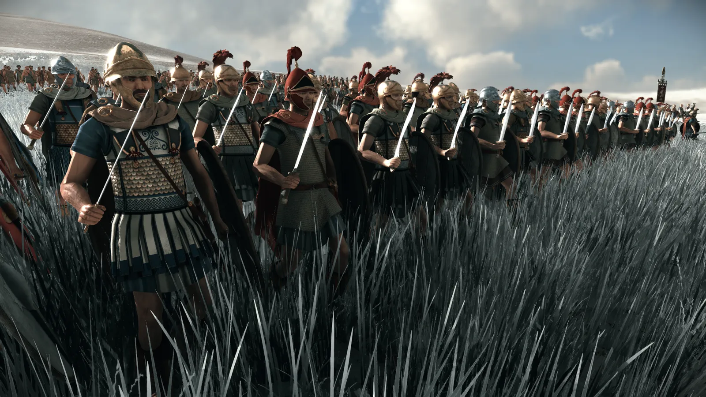
Aetolian Aspisdophoroi
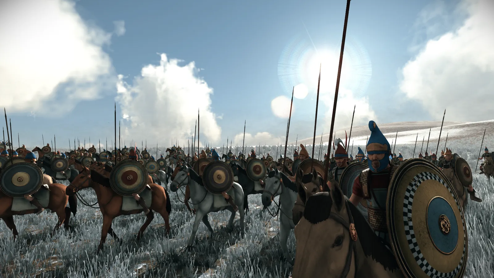
Akarnanian Hoplites
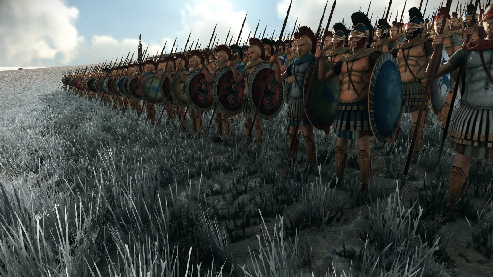
Elian Hoplites

That covers it for now, thanks for reading and remember to sign up at a channel if you're interested in joining as a beta tester! We need all the feedback we can get 😼